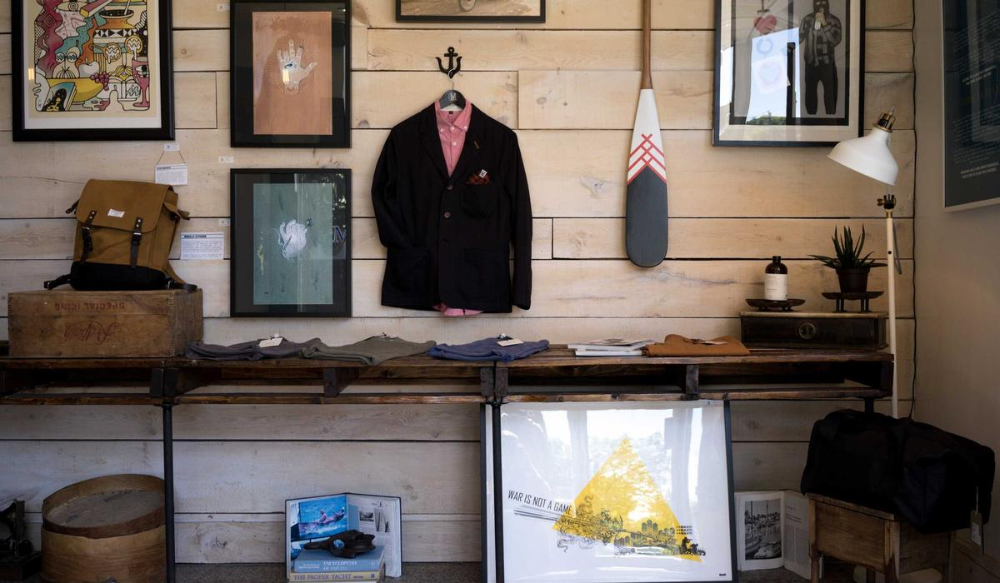

Site moves are the biggest risk to organic traffic. A redirect map built before launch protects existing performance.
Link building is a gradual process. Bursts of the same anchor text look engineered.
SEO performance comes from doing the groundwork: an architecture engines understand, content that answers real queries, and earned links.
International SEO fails on hreflang more than anything else. Each market needs pages built for how people search there.

Structured data should describe the real content. Fabricated markup invites a manual action.
Topical coverage outperforms single articles. Supporting content interlinked properly lifts the page you actually want ranking.